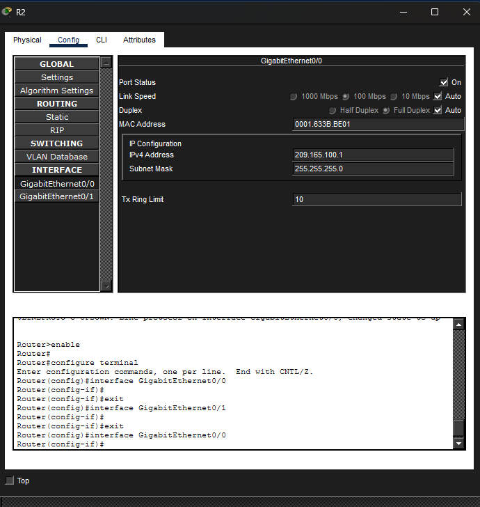

Lopez Lopez Josué Emmanuel
La IPSec VPN es una tecnología de red que permite establecer conexiones seguras entre diferentes redes a través de Internet. Esta implementación asegura la integridad, confidencialidad y autenticidad de los datos transmitidos entre los dispositivos conectados a la red cerrada.
En esta actividad, se llevará a cabo la implementación de una IPSec VPN en una red cerrada utilizando herramientas y configuraciones específicas para garantizar la seguridad de la comunicación entre los dispositivos. Para esto haciendo uso de la herramienta de simulación de redes de Cisco: Cisco Packet Tracer.
Configuración Inicial IPSec VPN
En packet tracer se realizara una topología sencilla que permita realizar la prueba de IPSec VPN
Configurar los routers y switches según la imagen de referencia (asignación de IP's y conexiones) para establecer la conexión VPN 
Configurar el acceso de licencia en los routers para el acceso a los paquetes de seguridad que se usaran
Configurar la IPSec VPN en ambos routers, asegurando que las políticas de seguridad y los parámetros de autenticación sean consistentes en ambos extremos de la conexión.
Conexiones y Configuración de Routers
| ID | Ip pública | Ip privada | Conexiones |
|---|---|---|---|
| R1 | 209.165.100.2 | 209.165.200.2 | R2 Gig0/0 - R1 Gig0/0, R3 Gig0/0, R1 Gig0/1 |
| R2 | 209.165.100.1 | 192.168.1.1 | R1 Gig0/0 - R2 Gig0/0, R1 Gig0/1 - Switch1 Gig0/1 |
| R3 | 209.165.200.1 | 192.168.3.1 | R1 Gig0/0 - R3 Gig0/0, R1 Gig0/1 - Switch2 Gig0/1 |
Comandos de terminal Empleados
Habilitación de paquetes de seguridad (securityk9)
license boot module c1900 technology-package securityk9
Configuración de la política de seguridad para la fase 1 (IKE)
crypto isakmp policy 10
Encriptación y autenticación para la fase 1
encryption aes 256
Autentificación pre share y grupo 5
hash sha
group 5
Configuración de la clave pre compartida para la fase 1
crypto isakmp key address 209.165.100.1 (.200.1 para el segundo router)
Configuración de la política de seguridad para la fase 2 (IPSec)
crypto ipsec transform-set R3-R1 esp-aes 256 esp-sha-hmac
Configuración del mapa de bits para la fase 2
crypto map IPSEC-MAP 10 ipsec-isakmp
setear peer y setear pfs en el grupo 5
set peer 209.165.200.1
set pfs group5
setear el cliclo de vida de la asociación de seguridad
set security-association lifetime seconds 86400
setear la transformación del set R3-R1
set transform-set R3-R1
hacer match con la dirección 100
match address 100
Aplicar el mapa de bits a la interfaz GigabitEthernet 0/0
interface GigabitEthernet 0/0
crypto map IPSEC-MAP
Configurar la lista de acceso para el tráfico que se desea cifrar
access-list 100 permit ip 10.10.10.0 0.0.0.255 192.168.10.0 0.0.0.255
Activar la nueva configuración
do wr
Las conexiones IPsec VPN o peer to peer son una forma de establecer comunicaciones seguras entre dos puntos finales a través de una red pública. Estas conexiones permiten cifrar el tráfico de red, garantizando la confidencialidad, integridad y disponibilidad de los datos transmitidos.
Quiero recalcar que me ha parecido muy interesante cómo se configuran las conexiones IPsec VPN, especialmente el proceso de establecer claves precompuestas y políticas de seguridad para garantizar la integridad del tráfico.
Cisco Systems. (2023). IPSec VPN configuration guide. Cisco Documentation. https://www.cisco.com/c/en/us/support/docs/security-vpn/ipsec-negotiation.html
Stallings, W. (2020). Network security essentials: Applications and standards (6th ed.). Pearson Education.
Kurose, J. F., & Ross, K. W. (2021). Computer networking: A top-down approach (8th ed.). Pearson Education.
OpenVPN Project. (2024). IPSec vs SSL VPN: Technical comparison. OpenVPN.net. https://openvpn.net
Kent, S., & Seo, K. (2005). Security architecture for the Internet Protocol. RFC 4301. IETF. https://datatracker.ietf.org/doc/html/rfc4301